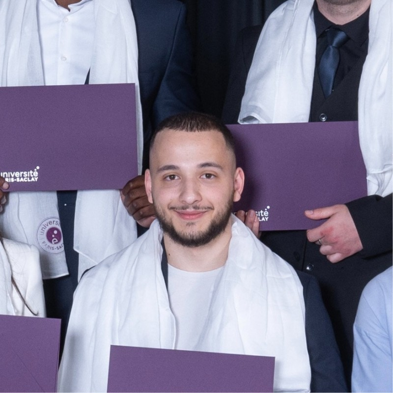
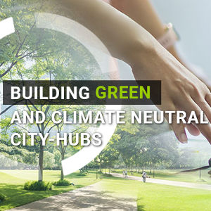

I build at the intersection of applied AI, model-driven engineering, and open-source software. Currently leading development of BESSER, a low-code / low-modeling platform at the Luxembourg Institute of Science & Technology (LIST), and contributing to the EU Horizon projects CLIMABOROUGH (smart cities) and 6G-TWIN (AI-driven network digital twins for 6G).

What I do, how I work, and what gets me excited.
I'm a Research & Software Engineer at the Luxembourg Institute of Science and Technology. I hold a Master's in Computer Science (Autonomous Systems) from Université Paris-Saclay, graduated with the highest honors.
My work sits where research meets production — translating ideas from machine learning, formal methods, and model-driven engineering into tools people actually use. As lead developer of BESSER, I drive the architectural roadmap, work alongside a small team, and keep the platform open, pragmatic, and useful.
I love clean code, small interfaces, and writing for humans first. When I'm not shipping, I'm probably reading a paper, breaking a build, or fixing a build I just broke.
From research labs in Paris to applied AI in Luxembourg.
Leading development and innovation of BESSER, an open-source low-code / low-modeling platform. Driving architectural design, the technical roadmap, and integration of generative-AI capabilities. Contributing to two EU Horizon projects: CLIMABOROUGH — smart-city dashboards for real-time urban data monitoring and analysis — and 6G-TWIN, where I help integrate network digital twins into AI-driven 6G systems.
R&D on the BESSER low-code / low-modeling platform. Built generative-AI features for automatic API generation and multi-cloud deployment, contributing to the foundation of the open-source release.
Studies in ML / DL interpretability — implemented techniques such as GLocalX to extract local and global rules, and advanced a β-VAE to improve separation of variation factors. Built outcome-prediction pipelines using Logistic Regression, SVM, Random Forest, and XGBoost. Implemented LTL model checking with a tableau-based approach.
Implemented a new application framework and developed GIS-based applications using ESRI technologies for the Office National des Forêts — the French public body responsible for managing national forests.
Formal training in computer science, AI, and autonomous systems.
Specialization in autonomous systems: modeling, algorithms, programming, and security. Coursework in multi-agent systems, machine learning, data analysis, and formal methods, capped by a substantial research project.
Foundations in algorithms, applications, and system design — with a focus on assessing complexity and validity of the software you build.
Open-source platforms and applied research I've shipped or contributed to.

EU Horizon project (€11.4M, ≈ €11M EU contribution) co-funded by the EU and CINEA, bridging the gap between design and implementation of urban innovations under climate change. I leverage BESSER to build smart dashboards enabling real-time urban-data monitoring & analysis.
EU Horizon project (€4M, 2024 – 2026) coordinated by LIST with 11 partners across Europe. Pioneering the integration of network digital twins into AI-driven 6G systems — safe sandboxes where engineers and AI agents can explore what-if scenarios, optimise performance, and design greener, more reliable mobile networks.
Research at Université Paris-Saclay on extracting local and global decision rules from black-box models (GLocalX), and on improving disentanglement in β-VAEs. Outcome-prediction pipelines benchmarked across Logistic Regression, SVM, Random Forest, and XGBoost.
If you'd like a preprint of any paper, just send me a note.
Languages, frameworks, and disciplines I reach for most often.
Whether it's a research collaboration, an open-source contribution, or just a chat about low-code and AI — my inbox is open.
armensulejmani91@gmail.com